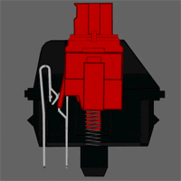
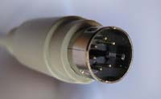
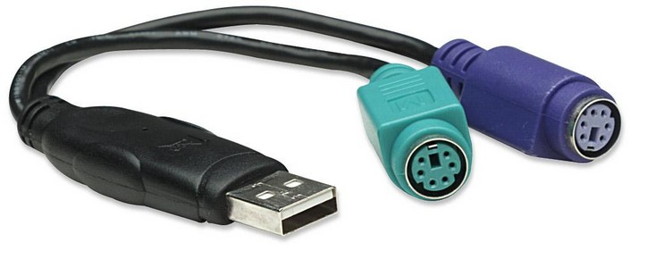
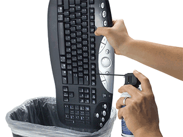

Teclados
Enlaces Internos
Definición
Tipos
Caracteristicas
Componentes principales
Funcionamiento
Tipos de conexiones actuales
Mantenimiento necesario
Definición

El teclado es un dispositivo que permite la introducción de caracteres tales como letras, números
y símbolos,
a un ordenador o dispositivo digital. Este dispositivo utiliza una serie de botones o teclas, para que
actúen como palancas mecánicas que envían información al ordenador o equipo.
Tipos
| Tipos |
Definición |
| Membrana |
Un teclado de membrana es uno en el que las teclas están acolchadas con una cubierta de goma o silicona.
Estas teclas son muy sensibles a la presión que se les aplica.
Son los más usados debido a su precio y disponibilidad
|
| Mecánicos |
Dos de los principales beneficios de los teclados mecánicos son su capacidad de respuesta (precisión),
más la durabilidad en relación con un teclado de membrana.
La diferencia en cuanto a los teclados de membrana es el precio y en que, en lugar de usar una membrana
de goma, los teclados mecánicos usan unos resortes llamados switches (red, blue, brown, etc.), resultan
más placenteros a la hora de escribir y en tema de durabilidad suelen ser muchísimo mas resistentes
frente a los de membrana
|
| Ergonomicos |
Los teclados ergonómicos no son realmente un tipo de teclados de computadora por sí solos, sino que se
refieren a cualquier teclado que esté diseñado para minimizar la tensión en tu cuerpo, generalmente se
consideran más cómodos. También causan menos estrés en tus manos, dedos y muñecas. En cuanto a la
funcionalidad, los teclados plegables son similares a los teclados básicos. Diferentes fabricantes
utilizan diferentes fuentes de energía para sus teclados rollup |
| Enrollables |
Los teclados enrollables combinan la capacidad de escritura fácil en un diseño pequeño de tamaño y peso.
Su estructura compacta los hace perfectos para llevarlos en tus viajes profesionales, de negocios o en
vacaciones. |
| Laser o virtual |
Inventado por los ingenieros de IBM, esta es una de las innovaciones más recientes en tecnología de
teclado. En general, el teclado de proyección usa láseres para mostrar un teclado virtual visible en una
superficie. Cuando seleccionas teclas en el teclado virtual, los sensores ópticos o la cámara captan
estos movimientos de los dedos, que luego se traducen en acciones mediante un software informático. |
| Tableta |
Básicamente es un tipo de teclado hecho para una tableta, se suelen conectar por USB, aunque hay modelos
de mayor precio que se conectan por bluetooth, mejoran la manera en la que se puede utilizar la tableta,
etc. |
Características
- Aproximadamente cien teclas
- Existen infinidad de ellos (diferentes materiales, tipos de tipografía, tamaños, etc.)
- Es un dispositivo de entrada
- Se utiliza para ingresar textos y números
- La distribución de las teclas es parecida a la de una máquina de escribir
- Si no tenemos un teclado se nos es imposible utilizar el ordenador, así que es una parte fundamental
Componentes principales
- Blue Pill: Es el cerebro de nuestro teclado, se encarga de leer, interpretar y entender las distintas
pulsaciones dentro de nuestra matriz
- PCB: Es la placa base del teclado, en ella se conectan todas las partes que va a tener el teclado
- Diodos
- Conectores: Básicamente donde vamos a conectar nuestro teclado, la inmensa mayoría actualmente utilizan los
USB
- Los switches (u otro tipo de material, plástico en el caso de la membrana): Son los interruptores
- La cubierta: Para proteger la placa base
- Los estabilizadores: Para teclas largas estabilizar la pulsación
- Los keycaps: Cubierta de los switches, básicamente lo que pulsamos, pueden ser de muchos materiales
Funcionamiento

El teclado de la computadora consta de una matriz de contactos, que, al presionar una tecla,
cierran el
circuito. Un microcontrolador detecta la presión de la tecla, y genera un código. Al soltarse la tecla, se
genera otro código. De esta manera el chip localizado en la placa del teclado puede saber cuándo fue
presionada y cuándo fue soltada, y actuar en consecuencia. Los códigos generadores son llamados Códigos de
barrido
Una vez detectada la presión de la tecla, los códigos de barrido son generados, y enviados de forma serial a
través del cable y con el conector del teclado, llegan a la placa madre de la PC. Allí, el código es
recibido por el microcontrolador conocido como BIOS DE TECLADO. Este chip compara el código de barrido con
el correspondiente a la Tabla de caracteres. Genera una interrupción por hardware, y envía los datos al
procesador.
Tipos de conexiones
AT
Introducido con el IBM PC en 1981, utilizan un conector tipo DIN, que es un tipo de conector bastante
grande, con cinco robustos pines, lo que lo hace muy resistente.

PS/2
A este tipo de conexión se la conoce también como mini DIN, y hasta hace un par de años ha sido el estándar
de conexión de teclado más utilizado.

USB
precisamente uno de los primeros periféricos que adoptó este tipo de conexión fue el teclado (que realmente,
al contar con un puerto específico en las placas base era, junto con el ratón, que lo adoptó casi al mismo
tiempo, el que menos lo necesitaba).
Hoy son ya mayoría los teclados que se venden con este tipo de conexión
Es plug and play, no necesitas software ni apagar el ordenador para enchufarlo

Inalámbricos
No requieren de cables y pueden ser instalados en el mismo momento que se conecte, funcionan por bluetooth
ya sea a una tarjeta bluetooth de nuestro ordenador o a un pincho USB del propio teclado que se conecta al
ordenador

Mantenimiento necesario
El mantenimiento de un teclado no es muy laborioso, si es de membrana basta con no darle golpes y intentar no
desconectar y conectar para tener cuidado con el cable y que no se rompa, y con los mecánicos quitarle las
keycaps y limpiarlos con los productos convenientes (productos especializados como puede ser aire comprimido,
usar hisopos, etc.)

Subir arriba
Volver a la página principal
Daniel Valdés López